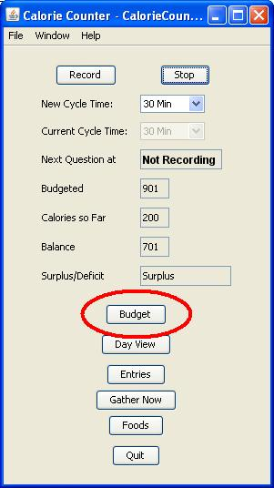
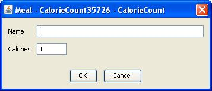

CalorieCount is a tool that helps in dieting and weight loss by keeping track of what you eat. The program periodically asks you what you've eaten, and then records that information in a "food diary" or a "food log." Keeping such info is one of the basic tools of dieting and is surprisingly helpful to the author.
This document is intended for the Windows environment. CalorieCount will run on linux, but it will complain about not being able to find the flashmenu native library.
To use CalorieCount, follow these steps:
- Install a JRE
- Download CalorieCount
- Start CalorieCount
- Create a CalorieCount file
- Set a budget
- Select a question interval
- Click record
- Respond to CC's questions
- Creating new Foods
- The Edit Food Dialog
- Responding to Subsequent Questions
- The Day View
- Where to go from Here
For the time being, I would not recommend using this application for those who are not familiar with things like JREs. You can download a JRE from java.sun.com
The recommended JRE for Release 0.2 of CalorieCount is 1.6.0_06. It may work with other editions, but your best bet is to use the recommended version.
You can download CalorieCount from it's home on SourceForge. The main site for the application is at caloriecount.sourceforge.net where you can get the latest news, fixes for the application.
You can run CalorieCount via any of the following:
- java -jar caloriecount.jar from the command line
- cc.bat from the command line for from a file browser
- double-clicking on the jar file (if you have the file association)
You should see the following window:
Before doing anything else, select "File>Save As..." or "File>Save" from the menu bar on the main window. The file name and extension do not matter to CalorieCount, so choose any file name you like.
From the main window (called the "MainFrame"), click on the budget button:

This should bring up the budget window:
A budget in CalorieCount is a goal for the number of calories you want to stay below over the course of a day. The various fields on this screen tell CalorieCount what your goal is.
The Calories per hour field is the number of calories that should be added to the balance per hour. "Day starts at" tells CalorieCount when it should start adding calories to the balance, while "Day ends at" tells it when to stop.
Click OK when you have entered your values and are ready for the next step.
Calorie count works by periodically asking you what you've eaten. The period of time between questions is configured on the MainFrame from the "New Cycle Time" field.
Select a time period from the drop-down. CalorieCount only supports certain time intervals (those in the drop-down), because the application will round to the closest interval.
For example, if you set the interval to 15 minutes and you start recording at 1:20pm, CalorieCount will ask you a question at 1:30. It will ask questions at 15, 30, 45 and at the start of the hour, given an interval of 15min.
This will tell CalorieCount to start gathering data. Note the following when you click record:
- The record button changes to read "Update"
- The current cycle time changes to the value in "new cycle time"
- The "next question at" field changes to the time of the next question.
Changing the "new cycle time" field and clicking on "update" will cause these fields to change to reflect the value in "new cycle time."
Once you are in recording mode, CalorieCount will periodically "poll" you to see if you have eaten anything or not. The window that does this:
When you first start using CalorieCount, this list will be empty. Click the "other" button to choose or create a new food for the database.
This window displays a list of your most frequently selected foods. The first time you start CalorieCount, however, this window will not contain any values.
The buttons have the following functions:
- "Select" creates an entry for the food highlighted in the table.
- "Other" allows you to select something not listed.
- "Skip" tells CalorieCount that you did not eat anything during the specified interval.
- "Stop" tells CalorieCount to stop bothering you --- CalorieCount stops recording.
This displays the foods that CalorieCount "knows" about. That is, these are foods that the system is able to record. The first time you run CalorieCount, the database will be empty, so you will need to create entries. From this window, select the "Create" button.

This window allows you to edit the details about a particular food. Fill in the fields and click on the OK button. For example:

Once you do this, the select windows should close and the Main Window should update some of its fields:
Once you start using CalorieCount you should see that the list of foods to select from changes. For example:
Hopefully you have better eating habits than I do, but the idea is the same :-)
Once you have some entries for the current day, you can view them with the Day View. From the main window, click on the "day view" button:
You should see a window like this:
From here, you can create, delete or edit entries from the day view. For example:
There are liable to be many updates to CalorieCount, assuming people use it. The main site for the program is on sourceforge at caloriecount.sourceforge.net or sourceforge.net/projects/caloriecount From there you can get the latest release, log bugs, and generally find out what is new and exciting in the world of CalorieCount.
Good luck and have fun!